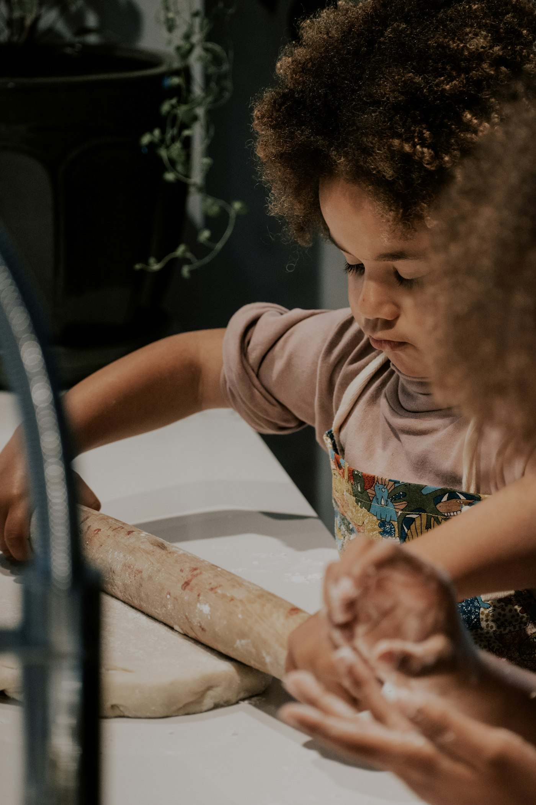
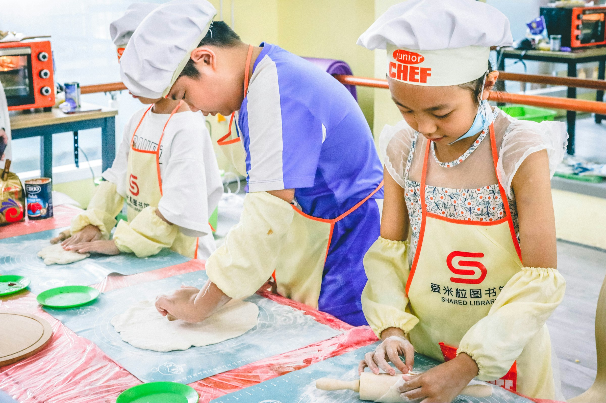
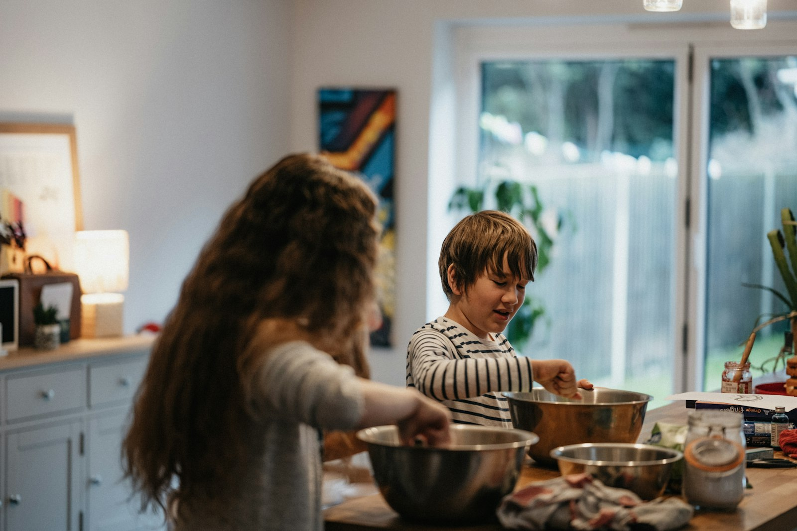
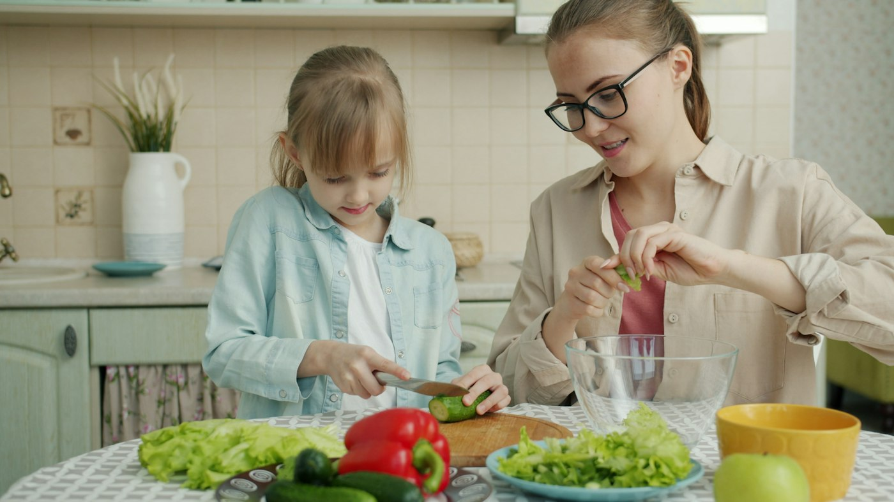
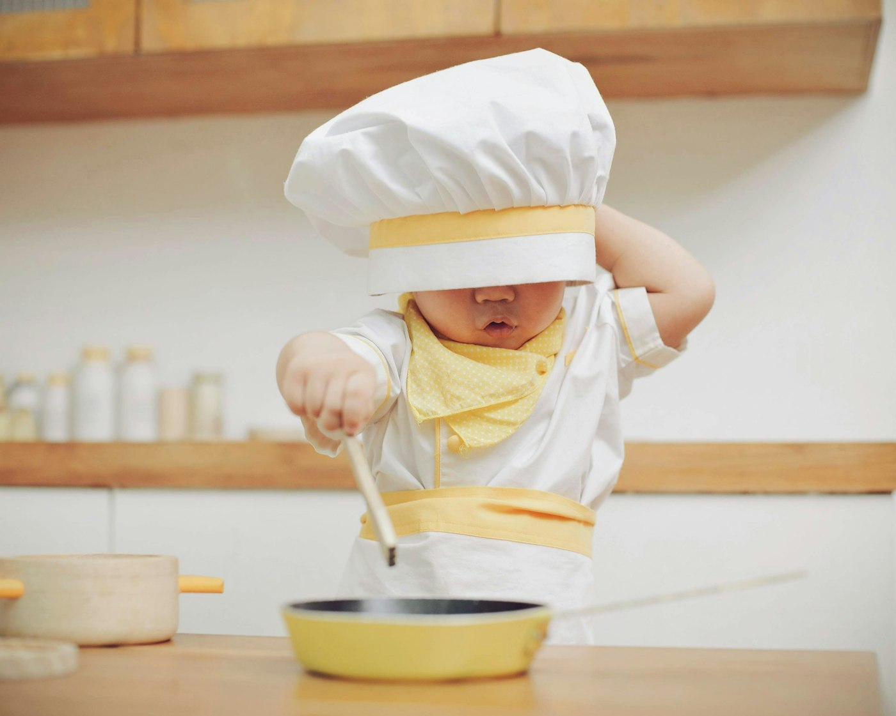

Level 1
The Prep Apprentice
Foundations
Focuses on foundational kitchen mechanics: hand hygiene, washing produce, measuring ingredients, stripping herbs, and kneading dough to understand food consistency.

Empowering Children with Essential Culinary Life Skills
“Our Sensory Kitchen” is a hands-on culinary workshop designed to teach children meal preparation as a vital, empowering life skill. By exploring raw ingredients, kitchen tools, and flavour building, young chefs develop fine motor control, confidence, and independence in the kitchen.

Core Philosophy
The kitchen serves as a living laboratory where curiosity turns into lifelong self-reliance. Through step-by-step scaffolding, children master kitchen mechanics, food safety, and project management, progressing naturally from basic prep work to creating complete, delicious meals.
Program Framework

Level 1
Foundations
Focuses on foundational kitchen mechanics: hand hygiene, washing produce, measuring ingredients, stripping herbs, and kneading dough to understand food consistency.

Level 2
Precision & Safety
Introduces safe cutting techniques using child-friendly cutlery, peeling, and the bridge-and-claw grip to build knife control, uniform prep, and safety awareness.

Level 3
Sequencing & Timing
Young chefs take full ownership of a 3-to-5 step recipe, managing timing, executing prep, balancing flavours, and proudly plating their creations.
Mastering hand-eye coordination, safe tool handling, and precise measurement.
Following multi-step instructions, managing time, and organising workspace.
Fostering pride in self-sufficiency and a healthy, intuitive relationship with real food.